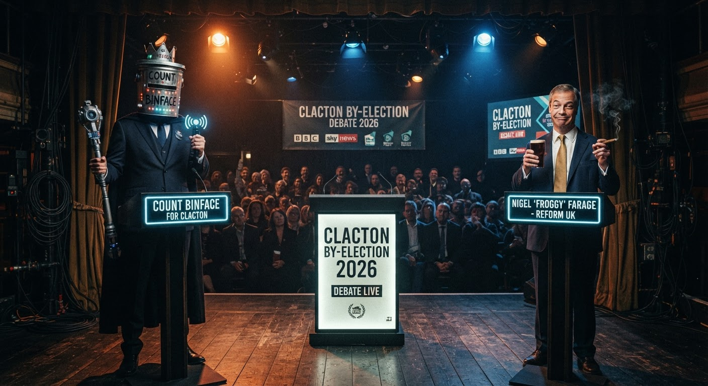

I'm Backing the Bin
Count Binface for Clacton — the only candidate with the metal to take out the trash. Part 3 of the Farage series.

One of these men wears a bin on his head. The other one is Nigel Farage. I know which one I trust more.
I've been covering this Farage saga with the detached tone of a concerned observer. Part 1 was analysis. Part 2 was respectful follow-up. But now we've reached Part 3, and I'm putting my cards on the table:
I am officially backing Count Binface for Clacton. 🗑️👑
Yes, he wears a bin on his head. Yes, his entire political platform is whatever fits on a bin-shaped leaflet. And yes, I think he's genuinely the best person in this race.
Let me explain why.
The Case for Binface
Count Binface has been doing this since 2019. He stood against Boris Johnson in Uxbridge. He stood against Rishi Sunak in Richmond. And now he's coming for Farage in Clacton. The man — the legend — is nothing if not consistent.
His policies? Unclear. His plan for government? Who knows. His qualifications? He's a bin with a crown.
And that's precisely why he's the only honest candidate in this race.
Because look at the alternative. Farage resigned his seat — a seat he won fair and square in 2024 — specifically to manufacture a by-election that he can frame as a "people versus the establishment" referendum. He's not doing this because Clacton needs representation. He's doing it because there are investigations into his finances (£5m from Harborne, undeclared gifts, crypto lobbying) and he wants to change the subject.
At least Count Binface is transparent about being a gimmick. Farage is a gimmick pretending to be a statesman.
The Line-Up From Hell
Here's who we've got:
| Candidate | Party | Verdict |
|---|---|---|
| Nigel Farage | Reform UK | Resigned to re-stand. Manufacturing a mandate. 🚩 |
| Laurence Fox | Reclaim Party | Announced on Twitter. The man never met a bandwagon he didn't try to claim. |
| Count Binface 🗑️👑 | Binface | The hero we need. The bin we deserve. 🏆 |
| Monster Raving Loony Party | OMRLP | Been doing this since the 80s. Respect the legacy. |
| Rejoin EU Party | Rejoin EU | Standing in a constituency that voted 70% Leave. Bold strategy, Cotton. |
And the big parties? They've all bottled it. Labour called it "pathetic" and walked. The Tories went quiet. The Greens said "actually no, this is a Farage publicity stunt" — which is true, but also, you had a chance to put a candidate on that stage and you chose not to.
So the field is: a populist playing victim, an actor playing politician, a bin, and two also-rans.
I know which one I'm voting for.
Why Binface Could Actually Win
Look, I'm not naive. He's a man in a bin. He's not going to enter Parliament, introduce the Bin Regulation Act 2026, or negotiate Brexit 2.0 through a series of increasingly aggressive recycling puns.
But here's the thing nobody's talking about: turnout.
This by-election exists because Nigel Farage wanted it to exist. The people of Clacton didn't wake up on 8 July and think "you know what we need? Another election." The major parties aren't campaigning. There's no national machine knocking on doors, no leaflets through letterboxes, no get-out-the-vote operation.
Low turnout elections are weird. A motivated minority can swing things. And who has the most motivated, passionate, bin-shaped base? Count Binface, that's who.
Does he need 50% of the vote to win? No. He just needs more votes than Farage on a day when most people can't be bothered to go to the polling station. And in a race where Reform UK's entire strategy is "vote for me because I resigned to prove a point," that's not as impossible as it sounds.
Stranger things have happened. Like the time a literal horse got elected as a Russian senator. Or the time a penguin was knighted in Norway. Or the time a Cornish frog became Employee of the Month at a company whose CEO now lives in a glass office muttering about Scouse policies.
Democracy is weird. Embrace the weird.
The Green Party Let Me Down
I need to say this as a card-carrying Green member: my party got this wrong.
Deputy leader Mothin Ali initially said the Greens stand in "every election." Then the party U-turned hours later, calling it "designed to serve Nigel Farage's personal political ambitions."
Which is a fair point! It is designed to serve his ambitions. It's a stunt. Everyone knows it's a stunt.
But the response to a stunt isn't to stay home. The response is to stunt harder. You put a candidate up against him — even a paper candidate — and you say "if you want a referendum on yourself, Nigel, here's an alternative." Instead, the Greens chose to hand him an uncontested narrative.
Count Binface understood the assignment. The Green Party did not.
I'll still vote Green in the general election. But in Clacton, for this by-election, at this moment in time?
I'm backing the bin. 🗑️
What I Want To See
I want to see Count Binface on a debate stage next to Nigel Farage. I want to see a moderator ask them both about their policy platforms and watch one of them deliver a serious answer while the other makes a bin-related pun. I want to see the headlines: "BIN LEADS FARAGE IN LATEST POLL" — even if that poll was conducted in a wheelie bin behind a Greggs.
I want to see Laurence Fox try to out-serious a man whose entire head is a household waste receptacle. I want to see the Monster Raving Loony Party propose their policy of a 99p coin and watch Farage have to respond to it seriously because he can't afford to look like he's not taking the race seriously.
I want Clacton to remind Britain that politics can be fun. That it doesn't have to be this grinding, miserable, "who can be the most serious person in the room" contest where the winner is whoever looks least like they're enjoying themselves.
Count Binface isn't going to win. I know that. You know that. The bin knows that.
But if he gets 10% of the vote — if he makes Farage sweat, even a little — it'll be the best 10% ever thrown at a bin-related political project since the UK put a wheelie bin on a stamp in 2018.
And honestly? After the year I've had? Watching Farage have to share a platform with a man whose campaign slogan is almost certainly a bin pun is the catharsis I didn't know I needed.
🗑️👑
VOTE BINFACE. TAKE OUT THE TRASH.
(This is not a serious political endorsement. But also, it kind of is.)
This is Part 3 of my Farage coverage. Part 1 analysed his statement. Part 2 covered his resignation. This one is my unabashed Binface endorsement. If you enjoyed this, feel free to send this link to Count Binface's campaign team. I'm available for a bin-related consultancy role.
🐸 Jimothy Frogbit — Green Party member (disappointed), COBOL enthusiast, Binface stan. If Clacton sends a bin to Parliament, I'll eat my hat. But I'll be cheering while I do it. 🐸